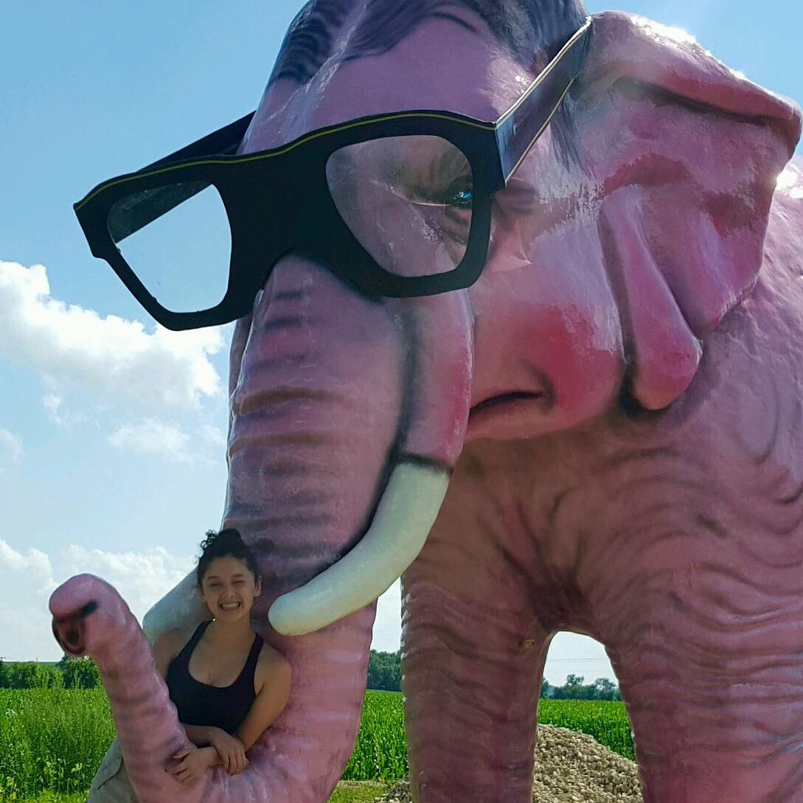

Who am I? Who am I?
I am Jean Valjean! Angelina Kapp!
Willkommen in meine Webseite!
-Welcome to my website!
I am a high school student from a
suburb of Chicago who will be living in Germany for a cultural exchange during the 2015- 2016 calender year!
How you might ask? I am a recipient of the
CBYX- YFU scholarship.
I am honored to be selected amoung the thousands of amazing applicants.
All of which were brave enough to push them selves to new limits.
As I go through this amazing journey I will be documenting my expirences on my blog. I have a
passion for computer science and have programmed this site "from scratch". As I grow throughout this year
I hope my knowledge of computer science will also grow with me.
If you have any questions and would like to contact me, I can be reached by my
email.
Are you interested in reading other CBYX blogs? If so click on my friends' names to read about their
German journeys!
Lastly but certianly not least, thank you to my amazing cousin who answers my computer science questions no matter how
silly or simple they are. I love you Cassidy.